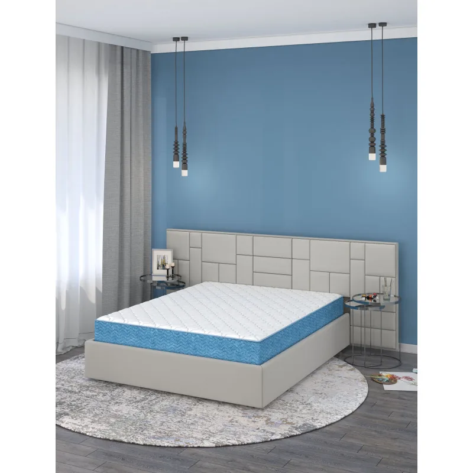
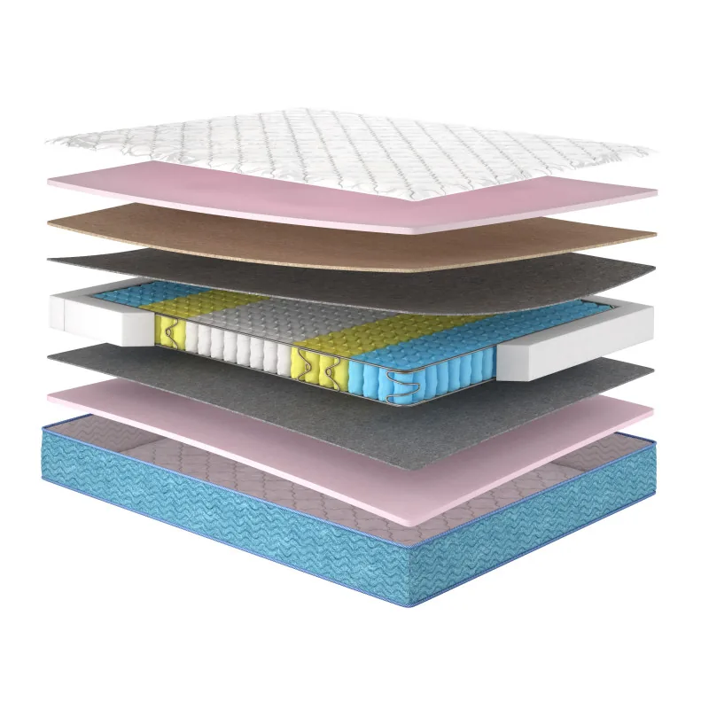
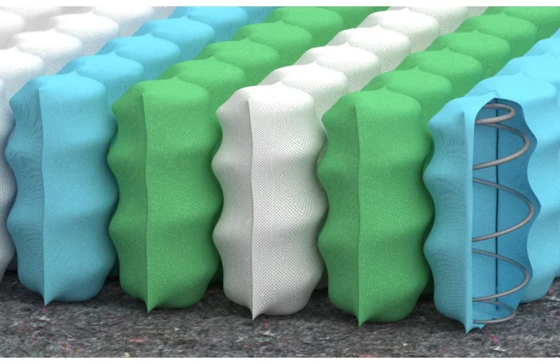
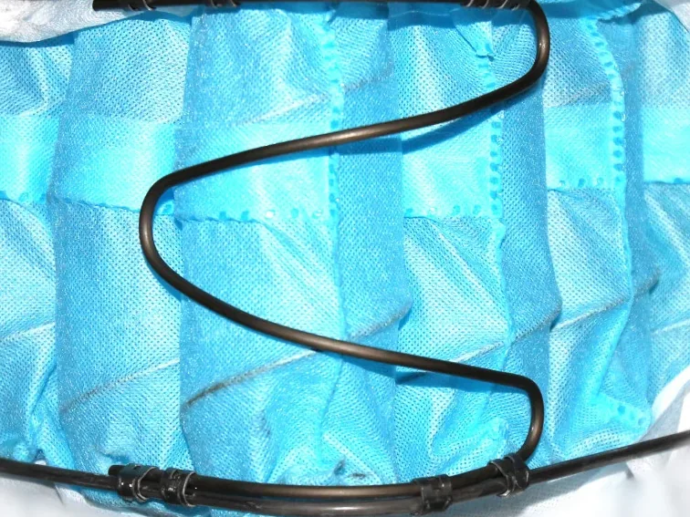
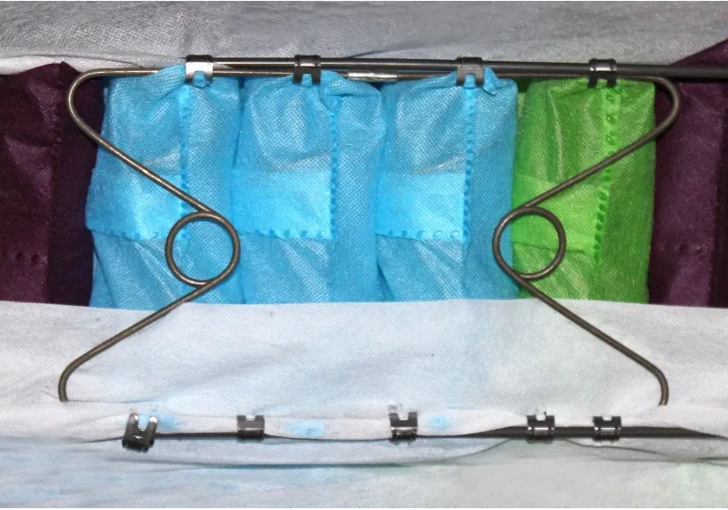

🦴
Природна анатомічна підтримка
Плечі та стегна мʼяко занурюються, поперек отримує опору. Хребет лежить рівно, мʼязи повністю розслабляються.
Модель колекції Butterfly від фабрики Matroluxe. Пʼятизонний блок незалежних пружин підтримує кожну частину тіла, а дві різні сторони — зимова з натуральною вовною та літня — дарують комфорт цілий рік.

Головна особливість моделі — посилений ортопедичний ефект. Його забезпечує пʼятизонний пружинний блок: кожна зона має свою жорсткість і відповідає певній частині тіла.
Плечі та стегна мʼяко занурюються, поперек отримує опору. Хребет лежить рівно, мʼязи повністю розслабляються.
Новітня система посилення блоку робить його міцнішим, підсилює ортопедичні властивості та продовжує термін служби.
Металеві рамки та кутова система підтримки не дають краям деформуватися — можна спокійно сидіти на краю ліжка.
Зимова сторона прошита натуральною вовною й зберігає тепло, літня — прохолодна та добре провітрюється.
Сторони відрізняються жорсткістю: перевертайте матрац залежно від сезону та самопочуття.
Натуральний кокос, вовна, дихаюча піна та зносостійкий жаккард — безпечно для дорослих і дітей.
Акційні ціни на розміри 140×200, 160×200 та 180×200. Потрібен інший розмір? Виготовимо під замовлення за хорошою ціною.

Висота матраца — 22 см. Кожен матеріал підібраний під своє завдання: підтримка, пружність, вентиляція та терморегуляція.
Сторони «Азалії» відрізняються наповненням і жорсткістю. Просто переверніть матрац, коли змінюється погода.
Чохол прошитий натуральною вовною. Вовна підтримує правильну терморегуляцію: зберігає тепло в холодну пору й не дає перегріватися.
Легка та прохолодна поверхня. Дихаюча піна Oxigen Foam і повсть Thermofiber забезпечують вентиляцію в спекотні ночі.
Пʼять зон різної жорсткості та тривимірне посилення каркаса: блок витримує високі навантаження й довго зберігає форму.



Виміряйте внутрішній розмір рами ліжка (без бортиків). Матрац має бути такого ж розміру або на 1 см менший. 140×200 — для півтораспального ліжка, 160×200 та 180×200 — для двоспального.
Так. Окрім 140×200, 160×200 та 180×200, виготовимо матрац під замовлення в потрібному розмірі за хорошою ціною. Оберіть «Інший розмір» у калькуляторі або напишіть нам — менеджер розрахує вартість і термін.
Зимова сторона прошита натуральною вовною, яка зберігає тепло. Літня — прохолодніша та краще провітрюється. Сторони мають різну жорсткість, тож можна обрати ту, що зручніша саме вам.
Це посилення пружинного блоку, яке разом із металевими рамками та кутовою системою підтримки робить краї стійкими до деформації, а сам блок — міцнішим і витривалішим до високих навантажень.
5 років гарантії від виробника Matroluxe.
Оплата готівкою чи карткою при отриманні у відділенні Нової пошти або курʼєру. Доставляємо в будь-яке місто України, зазвичай за 1–3 дні.